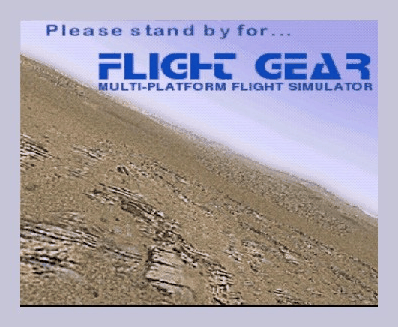
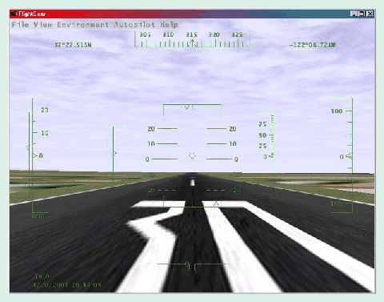
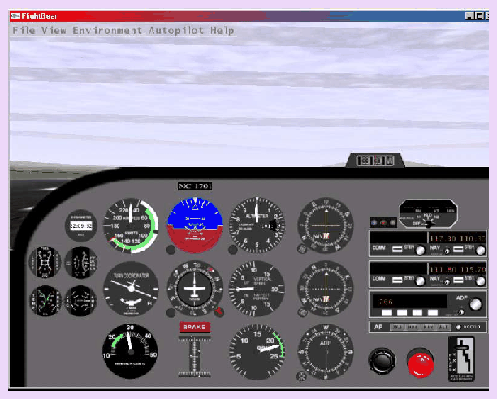
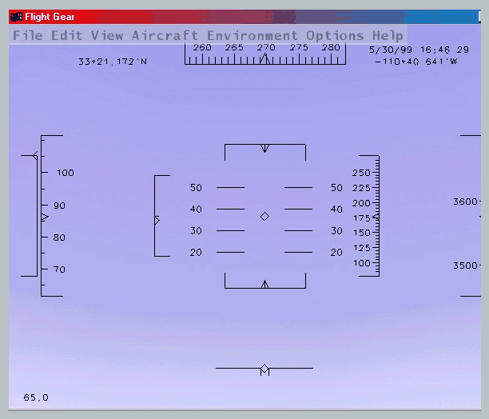

Most pilots are in a hurry and not interested in the internal workings of their engine. Similarly, there may be no need to go through all that manual for your first flight with FlightGear. If you are sure the graphics drivers for your card support OpenGL (check documentation; for instance all NVIDIA Windows and Linux drivers for TNT /TNT2/Geforce /Geforce2 do) and if you are working under one of the following operating systems:
you can make use of pre-compiled binaries . These as well as instructions how to install them can be found under
http://flightgear.sourceforge.net/Downloads/.
Just download them, install them according to the description and run them via the attached script runfgfs or batch file runfgfs.bat, resp.
There is no guarantee for this approach to work, though. If it doesn't, don't give up but have a closer look into the manual, notably Section 5.
You already may have some experience using Microsoft 's © FS2000 or any other of the commercially available PC flight simulators. As the price tag of those is usually within the $50 range buying one of them should not be a serious problem given that running any serious PC flight simulator requires a hardware within the $1500 range, despite dropping prices, at least.
Why then that effort of spending hundreds or thousands of hours of programming to build a free simulator? Obviously there must be good reason to do so:
The above-mentioned points make FlightGear superior to its competitors in several respect. FlightGear aims to be a civilian, multi-platform, open, user-supported, user-extensible simulator.
At present, there is no known flight simulator - commercial or free - supporting such a broad range of platforms.
The GPL is often misunderstood. In simple terms it states that you can copy and freely distribute the program(s) so licensed. You can modify them if you like. You are even allowed to charge as much money for the distribution of the modified or original program as you want. However, you must distribute it complete with the entire source code and it must retain the original copyrights. In short:
The full text of the GPL can be obtained from
http://www.gnu.org/copyleft/gpl.html.
Without doubt, the success of the Linux project initiated by Linus Torvalds inspired several of the developers. Not only has it shown that distributed development of even highly sophisticated software projects over the Internet is possible. It led to a product which, in several respects, is better than its commercial competitors.
This project goes back to a discussion among a group of net citizens in 1996 resulting in a proposal written by David Murr who, unfortunately, dropped out of the project (as well as the net) later. The original proposal is still available from the FlightGear web site and can be found under
http://flightgear.sourceforge.net/proposal-3.0.1.
Although the names of the people and several of the details have changed over time, the spirit of that proposal has clearly been retained up to the present time.
Actual coding started in the summer of 1996 and by the end of that year essential graphics routines were completed. At that time, programming was mainly performed and coordinated by Eric Korpela from Berkeley University. Early code ran under Linux as well as under DOS , OS/2 , Windows 95/NT , and Sun-OS . This was found to be quite an ambitious project as it involved, among other things, writing all the graphics routines in a system-independent way entirely from scratch.
Development slowed and finally stopped in the beginning of 1997 when Eric was completing his thesis. At this point, the project seemed to be dead and traffic on the mailing list went down to nearly nothing.
It was Curt Olson from the University of Minnesota who re-launched the project in the middle of 1997. His idea was as simple as it was powerful: Why invent the wheel a second time? There have been several free flight simulators available running on workstation s under different flavors of UNIX . One of these, LaRCsim (developed by Bruce Jackson from NASA), seemed to be well suited to the approach. Curt took this one apart and re-wrote several of the routines such as to make them build as well as run on the intended target platforms. The key idea in doing so was to exploite a system-independent graphics platform: OpenGL .
Fig. 1: LaRCsim 's Navion is still available in FlightGear.
In addition, a clever decision on the selection of the basic scenery data was made in the very first version. FlightGear scenery is created based on satellite data published by the U. S. Geological Survey . These terrain data are available from
http://edcwww.cr.usgs.gov/doc/edchome/ndcdb/ndcdb.html
for the U.S., and
http://edcwww.cr.usgs.gov/landdaac/gtopo30/gtopo30.html,
resp., for other countries. Those freely accessible scenery data, in conjunction with scenery building tools included with FlightGear, are an important feature enabling anyone to create his or her own scenery.
This new FlightGear code - still largely being based on the original LaRCsim code - was released in July 1997. From that moment the project gained momentum again. Here are some milestones in the more recent development history:
PLIB underwent rapid development later. It has been distributed by Steve as a separate package with a much broader range of applications in mind, since spring 1999. It has provided the basic graphics rendering engine for FlightGear since fall 1999.
http://flightgear.sourceforge.net/Downloads/world-scenery.html.
During development there were several code reorganization efforts. Various code subsystems were moved into packages. At present, the code is organized as follows:
On the base of the graphics engine is OpenGL , a platform independent graphics library. Based on OpenGL , the Portable Library PLIB provides basic rendering, audio, joystick etc. routines. Based on PLIB is SimGear , which includes all of the basic routines required for the flight simulator as well as for building scenery. On top of SimGear there are (i) FlightGear (the simulator itself), and (ii) TerraGear , which comprises the scenery building tools.
This is by no means an exhaustive history and most likely some people who have made important contributions have been left out. Besides the above-named contributions there was a lot of work done concerning the internal structure by: Jon S. Berndt , Oliver Delise, Christian Mayer, Curt Olson, Tony Peden, Gary R. Van Sickle , Norman Vine , and others. A more comprehensive list of contributors can be found in Chapter 8 as well as in the Thanks file provided with the code. Also, the FlightGear Website contains a detailed history worth reading of all of the notable development milestones under
http://flightgear.sourceforge.net/News/
One important prerequisite for running FlightGear is a graphics card supporting OpenGL . If you don't know what OpenGL is, the overview given at the OpenGL web site
says it best: ''Since its introduction in 1992, OpenGL has become the industry's most widely used and supported 2-D and 3-D graphics application programming interface (API)...''.
You may be able to run FlightGear on a computer that features a 3-D video card not supporting hardware accelerated OpenGL - and even on systems without 3-D graphics hardware at all. However, the absence of hardware OpenGL support can force even the fastest machine to its knees. The typical signal for missing hardware acceleration are frame rate s below 1 frame per second.
Any more recent 3-D graphics featuring hardware OpenGL will do. For Windows video card drivers that support OpenGL, visit the home page of your video card manufacturer. You should note, that sometimes OpenGL drivers are provided by the manufacturers of the graphics chip instead of by the makers of the board. If you are going to buy a graphics card for running FlightGear, I would suggest getting one based on a NVIDIA chip (TNT/TNT2/Geforce/Geforce2) at present.
To install the executable and basic scenery you need around 40 MB of free disk space . In case you want to compile the program yourself you will need about 150 MB for the source code and for temporary files created during compilation. This does not yet include the development environment, which possibly may have to be installed under Windows yet.
If you want to hear sound effects any capable sound card should suffice. FlightGear supports a joystick or yoke and rudder pedals under Linux as well as under Windows .
FlightGear is being developed primarily under Linux , a free UNIX clone (together with lots of GNU utilities) developed cooperatively over the Internet in much the same spirit as FlightGear itself. FlightGear also runs and is partly developed under Windows 95 , Windows 98 , Windows ME , Windows NT , and Windows 2000 . Building FlightGear is possible on a Macintosh and on several UNIX/X11 workstations, as well. Given you have a proper compiler installed, FlightGear can be built under all of these platforms. The primary compiler for all platforms is the free GNU C++ compiler (the Cygnus compiler under Win32).
Concerning the FlightGear source code there exist two branches, a stable one and a developmental branch. Even version numbers like 0.6, 0.8, and (someday hopefully) 1.0 refer to stable versions, while odd numbers like 0.7, 0.9, and so on refer to developmental versions. The policy is to only do bug fixes in the even versions, while new features are generally added to odd-numbered versions which, after all things have stabilized, will become the next stable release with a version number calculated by adding 0.1.
To add a little to the confusion, there usually are several versions of the ''unstable'' branch. First, there is a ''latest official release'' which the pre-compiled binaries are based on. For developers there exist nightly snapshots of the source code, available from
ftp://flightgear.sourceforge.net/pub/flightgear/Devel/Snapshots/.
While theses are quite recent, they may still be sometimes a few days back behind development. Thus, if you really want to get the very latest and greatest (and, at times, buggiest) code, you can use a tool called anonymous cvs available from
to get the recent code. A detailed description of how to set this up for FlightGear can be found under
http://flightgear.sourceforge.net/cvsResources/.
Given, that the stable version is usually quite old, while on the other hand the recent developmental versions may contain bugs (or, undocumented features), I recommend using the ''latest official (unstable) release'' for the average user. This is the latest version named under
http://flightgear.sourceforge.net/News/;
usually this is also the version which the binary distributions available under
http://flightgear.sourceforge.net/Downloads/
are based on. If not otherwise stated, all procedures in this Ïnstallation and Getting Started" will be based on these packages.
The most important one is the JSB flight model developed by Jon Berndt. Actually, the JSB flight model is part of a stand-alone project called JSBSim, having its home under
http://jsbsim.sourceforge.net/.
Concerning airplanes, the JSB flight model at present provides support for a Cessna 172 , for a fighter F-15 and for an experimental plane called X15 . Jon and his group are gearing towards a very accurate flight model, and the JSB model is expected to become FlightGear's default flight model some time in the near future.
As an interesting alternative, Christian Mayer developed a flight model of a hot air balloon. Moreover, Curt Olson integrated a special slew mode called Magic Carpet, which helps you to quickly fly from point A to point B.
All these modes can be invoked at runtime via a command line switch
- -fdm=abcd
to be discussed later in Section 6.
As another alternative, there is the UIUC flight model , developed by a team from the University of Illinois, in the beginning independently from FlightGear (while now using it for their simulations). This project aims at studying the simulation of aircraft icing. Its home is under
http://amber.aae.uiuc.edu/ jscott/sis/.
The UIUC provides a host of different aircraft including several Cessna C172 , a Learjet 24 , a Twin Otter and much more. To get an idea, you may check the folder Aircraft-UIUC of the FlightGear path. Contrary to the flight dynamics models named above, the UIUC flight dynamics model is invoked via a command line like
- -aircraft=uiuc - -aircraft-dir=/usr/local/FlightGear/Aircraft-uiuc/Beech99.
There is little, if any, material in this Guide that is presented here exclusively. You could even say with Montaigne that I ''merely gathered here a big bunch of other men's flowers, having furnished nothing of my own but the strip to hold them together''. Most (but fortunately not all) of the information can as well be obtained from the FlightGear web site located under:
http://flightgear.sourceforge.net/
However, a neatly printed manual is arguably preferable over loosely scattered Readme files by many, and those people may acknowledge the effort.
This FlightGear Installation and Getting Started manual is intended to be a first step towards a more complete FlightGear documentation (with the other parts, hopefully, to be written by others). The target audience is the end-user who is not interested in the internal workings of OpenGL or in building his or her own scenery, for instance. It is our hope, that someday there will be an accompanying FlightGear Programmer's Guide (which could be based on some of the documentation found under
http://flightgear.sourceforge.net/Docs;
a FlightGear Scenery Design Guide, describing the Scenery tools now packaged as TerraGear; and a FlightGear Flight School , at least.
Installation and Getting Started is organized as follows:
Chapter 3, Getting the engine: Installing OpenGL graphics drivers, describes how to prepare the computer for supporting FlightGear's graphics requirements. FlightGear is based on a graphics library called OpenGL, so you must install graphics card drivers that support OpenGL, preferred with hardware acceleration (unless you have already done so).
Chapter 4, Building the plane: Compiling the program, explains how to build (compile and link) the simulator. Depending on your platform this may or may not be required. There will however be executable programs (binaries) available for several platforms. Those on such systems who want to take off immediately, without going through the potentially troublesome process of compiling, may skip that Chapter and go directly to Chapter 5.
In Chapter 5, Preflight: Installing FlightGear, you will find instructions for installing the binaries in case you did not build them yourself as specified in the previous Chapter. You will need to install scenery, textures, and other support files collected in the base package .
The following Chapter 6, Takeoff: How to start the program, describes how to start the program and includes an overview on the numerous command line options.
Chapter 7, In-flight: All about instruments, keystrokes and menus, describes how to operate the program, i. e. how to actually fly with FlightGear . This includes a (hopefully) complete list of keystroke commands, an overview of the menu entries, detailed descriptions of instrument panel and the HUD (head up display) as well as hints on using the mouse functions.
In Chapter 8, Landing: Some further thoughts before leaving the plane, we would like to give credit to those who deserve it, and sketch an overview on what remains to be done.
I kindly ask you to help me refine this document by submitting corrections, improvements, and more. Any user is invited to contribute descriptions of alternative setups (graphics cards, operating systems etc.). I will be more than happy to include those into future versions of this Installation and Getting Started (of course not without giving credit to the authors).
I hope to continuously update this document at least for the foreseeable future, but supposedly will not be able to produce a new one for any single release of FlightGear. While I am watching the mailing lists, it would help if developers adding new functionality would send me a short note.
A good review on OpenGL drivers can be found under
http://flightgear.sourceforge.net/Hardware.
Specific information is collected for windows under
http://www.x-plane.com/SYSREQ/v5ibm.html
and for Macintosh under
http://www.x-plane.com/SYSREQ/v5mac.html.
An excellent place to search for documentation about Linux and 3-D accelerators is the Linux Quake HOWTO under
This should be your first aid in case something goes wrong with your Linux 3-D setup.
Unfortunately, there are so many graphics boards, chips and drivers out there that I am unable to provide a complete description for all systems. Given the present market dominance of NVIDIA combined with the fact that their chips have indeed been proven powerful for running FlightGear, we will concentrate on NVIDIA drivers in what follows.
If for whatever reason this does not work, you may try to download the most recent drivers from the NVIDIA site under
http://www.nvidia.com/Products/Drivers.nsf/Linux.html
At present, this page has drivers for all NVIDIA chips for the following Linux distributions: RedHat 7.1, Redhat 7.0, Redhat 6.2, Redhat 6.1, Mandrake 7.1, Mandrake 7.2, SuSE 7.1, SuSE 7.0 in several formats (.rpm, .tar.gz). These drivers support OpenGL natively and do not need any additional stuff.
The page named above contains a detailed README and Installation Guide giving a step-by-step description, making it unnecessary to copy the material here.
Again, you may first try the drivers coming with your graphics card. Usually they should include OpenGL support. If for whatever reason the maker of your board did not include this feature into the driver, you should install the Detonator reference drivers made by NVIDIA (which might be a good idea anyway). These are available in three different versions (Windows 95/98/ME, Windows 2000, Windows NT) from
http://www.nvidia.com/products.nsf/htmlmedia/detonator3.html
Just read carefully the Release notes to be found on that page. Notably do not forget to uninstall your present driver and install a standard VGA graphics adapter before switching to the new NVIDIA drivers first.
Notably, with 3DFX now having been taken over by NVIDIA , usage and support for these (Voodoo 1, 2, 3,...) cards will continually disappear. Reportedly, however, XFree86 4.0 supports these cards out of the box, even in accelerated mode. Thus, if you have got a recent Linux distribution you should be safe. If you are still running a version of Xfree86 3.X and run into problems, consider an upgrade. Notably the recent Debian distribution has been reported to work well.
With the Glide drivers no longer provided by 3DFX there seems to be little chance to get it running (except to find older OpenGL drivers somewhere on the net or privately). All pages which formerly provided official support or instructions for 3DFX are gone now. For an alternative, you may want to check the next section, though.
There is now an attempt to build a program which detects the graphics chip on your board and automatically installs the appropriate OpenGL drivers. This is called OpenGL Setup and is presently in beta stage. It's home page can be found under
I did not try this myself, but would suggest it as a last resort for those completely lost.
One final word: I would recommend that you test your OpenGL support with one of the programs that accompany the drivers, to be absolutely confident that it is functioning well. There are also many little programs, often available as screen savers, that can be used for testing. It is important that you are confident in your graphics acceleration because FlightGear will try to run the card as fast as possible. If your drivers aren't working well, or are unstable, you will have difficulty tracking down the source of any problems and have a frustrating time.
On the other hand, compiling FlightGear is not a task for novice users. Thus, if you're a beginner (we all were once) on a platform which binaries are available for, I recommend postponing this task and just starting with the binary distribution to get you flying.
As you will note, this Chapter is far from being complete. Basically, I describe compiling for two operating systems only, Windows and Linux , and for only one compiler, the GNU C compiler. FlightGear has been shown to be built under different compilers (including Microsoft Visual C) as well as different systems (Macintosh) as well. The reason for these limitations are:
Finally: You might want to check Section 9, Missed approach, if anything fails. In case this does not help I recommend sending a note to one of the mailing lists (for hints on subscription see Chapter 8).
There are several Linux distributions on the market, and most of them should work. Some come even bundled with (often outdated) versions of FlightGear. However, if you are going to download or buy a distribution, Debian (Woody) is suggested by most for this purpose. SuSE works well, too.
Contrary to Linux/Unix systems, Windows usually comes without any development tools. This way, you first have to install a development environment. On Windows, in a sense, before building the plane you will have to build the plant for building planes. This will be the topic of the following section, which can be omitted by Linux users.
There is a powerful development environment available for Windows and this even for free: The Cygnus development tools, resp. Cygwin. Their home is under
http://sources.redhat.com/cygwin/,
and it is always a good idea to check back what is going on there now and then.
Nowadays, installing Cygwin is nearly automatic. First, make sure the drive you want Cygwin, PLIB, SimGear and FlightGear to live on, has around 600 MB of free disk space . Create a temporary directory and download the installer from the site named above to that directory. (While the installer does an automatic installation of the Cygnus environment, it is a good idea to download a new installer from time to time.)
Invoke the installer now. It gives you three options. To avoid having to download stuff twice in case of a re-installation or installation on a second machine, I highly recommended to take a two-step procedure. First, select the option Download from Internet. Insert the path of your temporary directory, your Internet connection settings and then choose a mirror form the list. Near servers might be preferred, but may be sometimes a bit behind with mirroring. I found
a very recent and fast choice. In the next windows the default settings are usually a good start. Now choose Next, sit down and wait.
If you are done with this. Invoke the installer a second time, now with the option Install from local directory. After confirming the temporary directory you can select a root directory (acting as the root directory of your pseudo UNIX file system). Cygnus does not recommend taking the real root directory of a drive, thus choose c:/Cygwin (but other drivers work as well). Now, all Cygwin stuff and all FlightGear stuff lives under this directory. In addition, select
Default text file type: Unix
Install For: Just me.
As a final step you should include the binary directory (for instance: c:/Cygwin/bin) into your path either via adding path=c:\Cygwin\bin in your autoexec.bat or via the corresponding tool in WindowsNT/2000.
Now you are done. Fortunately, all this has to be done only once. At this point you have a nearly UNIX-like (command line) development environment. Because of this, the following steps are nearly identical under Windows and Linux/Unix.
The following steps are identical under Linux/Unix and under Windows with minor modifications. Under Windows, just open the Cygwin icon from the Start menu or from the desktop to get a command line.
cd:/usr/local/
mkdir source
(at present, this is version plib-1.2.0.tar.gz) to /usr/local/source. Change to that directory and unpack PLIB using
tar xvfz plib-X.X.X.tar.gz.
cd into plib-X.X.X and run
./configure
make
make install.
Under Linux, you have to become root for being able to make install, for instance via the su command.
Confirm you now have PLIB's header files under /usr/include/plib (and nowhere else).
ftp://simgear.sourceforge.net/pub/simgear/Source/
Download it to /usr/local/source. Change to that directory and unpack SimGear using
tar xvfz plib-X.X.X.tar.gz.
cd into SimGear-X.X.X and run
./configure
make
make install
Again, under Linux, you have to become root for being able to make install, for instance via the su command.
ftp://flightgear.sourceforge.net/pub/flightgear/Source/
and download it to /usr/local/source. Now, unpack FlightGear using
tar xvfz FlightGear-X.X.X.tar.gz.
cd into FlightGear-X.X.X and run
./configure
configure
knows about numerous options,
with the more
relevant ones to be specified via a with/without switch as
A good choice would be - -prefix=/usr/local/FlightGear. In this case FlightGear's binaries will live under /usr/local/FlightGear/bin.
Assuming configure finished successfully, run
make
make install.
Again, under Linux, you have to become root for being able to make install, for instance via the su command.
Note: You can save a significant amount of space by stripping all the debugging symbols off the executable. To do this, make a
cd /FlightGear/bin
to the directory in the install tree where your binaries live and run
strip *.
This completes building the executable and should result in a file fgfs (Unix) or fgfs.exe under /usr/local/FlightGear/bin
Note: If for whatever reason you want to re-build the simulator, use the command make distclean either in the SimGear-X.X.X or in the FlightGear-X.X.X directory to remove all the build. If you want re-run configure (for instance because of installing another version of PLIB etc.), remove the files config.cache from these same directories before.
http://flightgear.sourceforge.net/Downloads/.
There should be a workplace for Microsoft Visual C included in the official FlightGear distribution. Macintosh users find the required CodeWarrior files as a .bin archive under
http://icdweb.cc.purdue.edu/ walisser/fg/.
If you successfully performed the steps named above, you have a directory holding the executables for FlightGear. This is not yet sufficient for performing FlightGear, though. Besides those, you will need a collection of support data files (scenery, aircraft, sound) collected in the so-called base package. In case you compiled the latest official release, the accompanying base package is available from
ftp://flightgear.sourceforge.net/pub/flightgear/Shared/
as fgfs-base-X.X.X.tar.gz.
This package is usually quite large (around 25 MB), but must be installed for FlightGear to run properly. There is no compilation required for this package. Just download it to /usr/local and install it with
tar xvfz fgfs-base-X.X.X.tar.gz.
Now you should find all the base files under /usr/local/Flightgear in the following directory structure: :
/usr/local/Flightgear
/usr/local/Flightgear/Aircraft
/usr/local/Flightgear/Aircraft-uiuc
... /usr/local/Flightgear/bin
... /usr/local/Flightgear/Weather.
It you're really into adventures or feel you're an advanced user, you can try one of the recent nightly snapshots under
ftp://flightgear.sourceforge.net/pub/flightgear/Devel/Snapshots/.
In this case you have to get the most recent Snapshot from SimGear under
ftp://simgear.sourceforge.net/pub/simgear/Devel/Snapshots/
as well. But be prepared: These are for development and may (and often do) contain bugs.
If you are using these nightly snapshots the base package named above will usually not be in sync with the recent code and you have to download the most recent developmental version from
Klick Download Base Package Snapshot. The next page uses a special automated download mechanism; if you now double-klick fgfsbase-X.X.X.tar.gz the download starts automatically. If you for whatever reason have difficulty with this, you may right-klick the file and use Save as... to download it manually.
I suggest downloading this package fgfsbase-X.X.X.tar.gz to a temporary directory. Now, decompress it using
tar xvfz fgfsbase-X.X.X.tar.gz.
In recent versions of fgfsbase-X.X.X.tar.gz this results in a subdirectory /fgfsbase containing /Flightgear and all of its subdirectories. If you installed the FlightGear binaries under /usr/local/Flightgear/bin as described above, move the base package files and sub-directories into that directory and you are done. Make sure you got the directory structure named above.
The following supposes you are on a Windows 95/98/Me/NT/2000 system. Installing the binaries is quite simple. Go to
ftp://flightgear.sourceforge.net/pub/flightgear/Win32/
and download the three files fgfs-base-X.X.X.zip, fgfs-manual-X.X.X.zip, and fgfs-win32-bin-X.X.X.zip (being provided courtesy Curt Olson) from
ftp://flightgear.sourceforge.net/pub/flightgear/Win32/
to a drive of your choice. I suppose you already have a tool for unzipping them. If not, I would suggest downloading a free one like POWERARCHIVER, which you can fetch from
http://www.powerarchiver.com/.
Use it to extract the files. If you choose drive c: you should find a file runfgfs.bat under c:/Flightgear now. Double-clicking it should invoke the simulator.
If your Macintosh is running the conventional Mac OS 9 or earlier, download the file FlightGear_Installer_0.7.5.sit (being provided courtesy Darrell Walisser) from
http://icdweb.cc.purdue.edu/ walisser/fg/.
This file contains the program as well as the required base package files (scenery etc.). For unpacking, use Stuffit Expander 5.0 or later.
Alternatively, if you are running Mac OS X , download fgfs-OSX.gz from the same site named above. This can be unpacked with gunzip via
gunzip fgfs-OSX.gz.
Now you will find a folder Flightgear containing the script runfgfs to start the program.
Download the file flightgear_0.7.6-6_i386.deb (being provided courtesy Ove Kaaven) from any of the Debian mirror sites listed under
http://packages.debian.org/unstable/games/flightgear.html.
Like any Debian package, this can be installed via
dpkg --install flightgear_0.7.6-6_i386.deb.
After installation, you will find the directory /usr/local/Flightgear containing the script runfgfs to start the program.
Download all the required files (being provided courtesy Erik Hofman) from
http://www.a1.nl/ ehofman/fgfs/
and install them. Now you can start FlightGear via running the script
/usr/local/FlightGear/bin/gofgfs.
There is a complete set of scenery files worldwide available created by Curt Olson which can be downloaded via a clickable map under
http://flightgear.sourceforge.net/Downloads/world-scenery.html
Moreover, Curt provides the complete set of US Scenery on CD-ROM for those who really would like to fly over all of the USA. For more detail, check the remarks on the downloads page above.
For installing these files, you have to unpack them under /Flightgear/Scenery. Do not de-compress the numbered scenery files like 958402.gz ! This will be done by FlightGear on the fly.
Most of the packages named above include the complete FlightGear documentation including a .pdf version of this Installation and Getting Started Guide intended for pretty printing using Adobe's Acrobat Reader being available from
Moreover, if properly installed, the .html version can be accessed via FlightGear's help menu entry.
Besides, the source code contains a directory docs-mini containing numerous ideas on and solutions to special problems. This is also a good place for further reading.
runfgfs - -option1 - -option2...,
where the options will be described in Section 6.3 below.
In Windows explorer, change to the /FlightGear directory and double-click runfgfs.bat.
Alternatively, if for one or the other reason the batch file does not work or is missing, you can open an MS-DOS shell, change to the directory where your binary resides (typically something like c:/FlightGear/bin where you might have to substitute c: in favor of your FlightGear directory), set the environment variable via (note the backslashes!)
SET FG_ROOT=c:\FlightGear\bin
and invoke FlightGear (within the same MS-DOS shell, as environment settings are only valid locally within the same shell) via
fgfs - -option1 - -option2....
Of course, you can create your own runfgfs.bat with notepad using the two lines above.
For getting maximum performance it is recommended to minimize (iconize) the text output window while running FlightGear.

Fig. 2: Ready for takeoff. Waiting at the default startup position in Arizona.
Following is a list and short description of the numerous command line options available for FlightGear.
If you are running FlightGear under Windows you can include these into runfgfs.bat. However, in case of options you want to re-use continually (like joystick settings) it is recommended to include them into a file called .fgfsrc under Unix systems and system.fgfsrc, resp., under Windows. This file has to be in the top FlightGear directory (for instance /usr/local/Flightgear). As it depends on your preferences , it is not delivered with FlightGear, but can be created with any text editor (notepad, emacs, vi, if you like). Examples for such a file (including a detailed description on the configuration of joysticks) can be found under
http://rockfish.net/shell/aboutjoy.txt.
The following start options work only if you compiled with Oliver Delise's multi-pilot networking code enabled, i.e. - -with-network-olk (see Chapter 4). This is not implemented by default.
The combination of the numerous types of joystick s, flightsticks, yoke s, pedal s etc. on the market with the several target operating systems, makes joystick support a nontrivial task in FlightGear.
FlightGear supposes certain default values for the axes of your joystick/yoke/rudder as follows (note that numbering of axis starts with 0!) :
| axis 0 | aileron |
| axis 1 | elevator |
| axis 2 | rudder |
| axis 3 | throttle |
These axes settings are valid, for instance for MS sidewinder. However, if you happen for
instance to use the quite common combination of CH Virtual Pilot (Pro) + CH (Pro) Pedals
this will not work for you. As a result you may see the plane spin shortly after start,
for instance.
Basically, all these axes settings can be modified via the following command line switch:
- -prop:/input/name=jsx/axisn/property=value,
where
| x | = | number of device, |
| n | = | number of axis, |
| property | = | control, dead-band, offset, factor, |
| value | = | the corresponding value for that property. |
The number of the device starts with 0, and usually is 0, if you only have one
joystick. number of the axis characterizes the axis, the property of which is to be
defined, and starts with 0, as well. The property control can have the values
/controls/aileron, /controls/elevator, /controls/rudder, /controls/throttle.
dead-band specifies a range, within which signals are discarded, which is useful to
avoid jittering for minor yoke movements. The property offset can be used to
specify a device, the value of which should not be centered in its neutral position. This
is typically the case for throttle. Finally, factor controls sensitivity of that
axis. The default value is +1, with a value of -1 reversing the behavior.
An example might make this more clear. Let us consider the following entries in .fgfsrc or system.fgfsrc , resp.,
- -prop:/input/js0/axis0/control=/controls/aileron
- -prop:/input/js0/axis1/control=/controls/elevator
- -prop:/input/js0/axis2/control=/controls/throttle
- -prop:/input/js0/axis2/factor=-1.0
- -prop:/input/js0/axis3/control=/controls/rudder
- -prop:/input/js0/axis3/factor=1.0
- -prop:/input/js0/axis3/offset=0.5
These are the settings I use for my CH Virtual Pilot Pro/Pro Pedals (Gameport). The first 2 lines might be not strictly necessary, as they are set by default. However, as you see, throttle and rudder are exchanged in my case. Besides maximum and minimum of throttle are reversed.
You should be able to at least get your joystick working along these lines. Concerning all the finer points, for instance, getting the joystick buttons working, John Check has written a very useful README, the most recent version of which is available from
http://rockfish.net/shell/aboutjoy.txt.
In case you run into any trouble with your input device, it is highly recommended to have a look into this document.
A short leaflet based on this chapter can be found under
http://flightgear.sourceforge.net/Docs/InstallGuide/FGShortRef.html.
While joystick s or yoke s are supported as are rudder pedals, you can fly FlightGear using the keyboard alone. For proper control of the plane during flight via the keyboard (i) the NumLock key must be switched on (ii) the FlightGear window must have focus (if not, click with the mouse on the graphics window). Several of the keyboard controls might be helpful even in case you use a joystick.
After activating NumLock the following keyboard controls should work:
Tab. 1: Main keyboard controls for FlightGear on the numeric keypad with activated NumLock key:.
| Key | Action |
| Pg Up/Pg Dn | Throttle |
| Left Arrow/Right Arrow | Aileron |
| Up Arrow/Down Arrow | Elevator |
| Ins/Enter | Rudder |
| 5 | Center aileron/elevator/rudder |
| Home/End | Elevator trim |
For changing views you have to de-activate NumLock. Now Shift + < Numeric Keypad Key > changes the view as follows:
Tab. 2: View directions accessible after de-activating NumLock on the numeric keypad.
| Numeric Key | View direction |
| Shift-8 | Forward |
| Shift-7 | Left/forward |
| Shift-4 | Left |
| Shift-1 | Left/back |
| Shift-2 | Back |
| Shift-3 | Right/back |
| Shift-6 | Right |
| Shift-9 | Right/forward |
The autopilot is controlled via the following controls:
Tab. 3: Autopilot and related controls.
Ctrl + T is especially interesting as it makes your Cessna 172
behave
like a cruise missile. Ctrl + U might be handy in case you feel you're just about to
crash. (Shouldn't real planes sport such a key, too?)
In case the autopilot is enabled, some of the numeric keypad keys get a special meaning:
Tab. 4: Special action of keys, if autopilot is enabled.
| Key | Action |
| Up/Down Arrow | Altitude adjust |
| Ins/Enter | Heading adjust |
| Pg Up/Pg Dn | Auto Throttle adjust |
Besides these basic keys there are some more special ones; some of these you'll probably
not want to try during your first flight:
Tab. 5: Special keyboard controls.
Tab. 6: Alternative function key commands accessible via Shift +
key.
| Key | Action |
| Shift-F1 | Restore flight from fgfs.sav |
| Shift-F2 | Save current flight to fgfs.sav |
| Shift-F3 | Read a panel from a property list |
| Shift-F4 | Re-read global preferences from preferences.xml |
| Shift-F5/F6 | Shift the panel in y direction |
| Shift-F7/F8 | Shift the panel in x direction |
| Shift-F10 | Toggle data logging of FDM on/off |
Note: If you have difficulty processing the screenshot
fgfs-screen.ppm
on a windows machine, just recall that simply pressing the ''Print'' key copies the
screen to the clipboard, from which you can paste it into any graphics program.
At present, the menu provides the following useful functions.
The instrument panel is activated by default when you start FlightGear, but can be de-activated by pressing the ''P'' key. While a complete description of all the functions of the instrument panel of a Cessna is beyond the scope of this guide, I will at least try to outline the main flight instrument s or gauge s.

Fig. 3: The panel.
Let us start with the most important instruments any simulator pilot must know. In the center of the instrument panel (Fig. 3), in the upper row, you find the artificial horizon (attitude indicator ) displaying pitch and bank of your plane. It has pitch marks as well as bank marks at 10, 20, 30, 60, and 90 degrees.
Left to the artificial horizon, you'll see the airspeed indicator . Not only does it have a speed indication in knots but also several arcs showing characteristic velocity rages you have to consider. At first, there is a green arc indicating the normal operating range of speed with the flaps fully retracted. The white arc indicates the range of speed with flaps in action. The yellow arc shows a range, which should only be used in smooth air. The upper end of it has a red radial indicating the speed never to be exceeded.
Below the airspeed indicator you can find the turn indicator . The airplane in the middle indicates the roll of your plane. If the left or right wing of the plane is aligned with one of the marks, this would indicate a standard turn, i.e. a turn of 360 degrees in exactly two minutes.
Below the plane, still in the turn indicator, is the inclinometer . It indicates if rudder and aileron s are coordinated. During turns, you always have to operate aileron and rudder in such a way that the ball in the tube remains centered; otherwise the plane is skidding. If you don't have pedals or lack the experience to handle the proper ratio between aileron/rudder automatically, you can start FlightGear with the option - -enable-auto-coordination.
Further below the turn indicator is the manifold pressure indicator .
To the r.h.s of the artificial horizon you find the altimeter showing the height above sea level (not ground!) in hundreds of feet. Below the altimeter is the vertical speed indicator indicating the rate of climbing or sinking of your plane in hundreds of feet per minute. While you may find it more convenient to use then the altimeter in cases, keep in mind that its diplay usually has a certain lag in time. Further below the vertical speed indicator is the RPM (rotations per minute) indicator , which displays the rotations per minute in 100 RPMs. The green arc marks the optimum region for long-time flight.
The group of the main instruments further includes the gyro compass being situated below the artificial horizon. Besides this one, there is a magnetic compass sitting on top of the panel.
Four of these gauges being arranged in the from of a ''T'' are of special importance: The air speed indicator, the artificial horizon, the altimeter, and the compass should be scanned regularly during flight.
Besides these, there are several supplementary instruments. To the very left you find the clock , being an important tool for instance for determining turn rates. On the bottom, below the compass, is the flap indicator . Further below are several small gauges displaying the technical state of your engine. Certainly the most important of them is the fuel indicator - as any pilot knows.
Like in most flight simulators, you actually get a bit more than in a real plane. The instrument on the bottom below the turn indicator indicates the position of your yoke . This serves as kind of a compensation for the missing forces you feel while pushing a real yoke, for instance. Three of the arrows correspond to the three axes of your yoke/pedal controlling nose up/down, bank left/right, rudder left/right, and throttle. (Keep in mind: They do not reflect the actual position of the plane!) The left vertical arrow indicates elevator trim. The brake indicator above yoke indicator displays when you are braking.
The right hand side of the panel is occupied by the radio stack . Here you find two VOR receivers (NAV1/2), an NDB receiver (ADF ) and two communication radio s (COMM1/2) as well as the autopilot.
The communication radio is used for communication with air traffic facilities ; it is just a usual radio transceiver working in a special frequency range. The frequency is displayed in the ''COMM'' field. Usually there are two COMM transceivers; this way you can dial in the frequency of the next controller to contact while still being in contact with the previous one.
The VOR (Very High Frequency Omni-Directional Range) receiver is used for course guidance during flight. The frequency of the sender is displayed in the ''NAV'' field. In a sense, a VOR acts similarly to a light house permitting to display the position of the aircraft on a radial around the sender. It transmits one omni-directional ray of radio waves plus a second ray, the phase of which differs from the first one depending on its direction (which may considered as a ''rotating'' signal). The phase difference between the two signals allows evaluating the angle of the aircraft on a 360 degrees circle around the VOR sender, the so-called radial. This radial is then displayed on the gauges NAV1 and NAV2, resp., left to frequency field.
Below the two COMM/NAV devices is an NDB receiver called ADF (automatic direction finder). Again there is a field displaying the frequency of the facility. The ADF can be used for navigation, too, but contrary to the VOR does not show the position of the plane in a radial relative to the sender but the direct heading from the aircraft to the sender. This is displayed on the gauge below the two NAV gauges.
Above the COMM1 display you will see three LEDs in the colors blue, amber, and white indicating the outer, middle, and, inner, resp. marker beakon. These show the distance to the runway threshold during landing. They to not require the input of a frequency. Right to these three LEDs is the autopilot switch, allowing you to set it to hold the heading, a NAV radial, or the altitude.
A detailed description of the workings of these instruments and their use for navigation lies beyond this Guide; if you are interested in this exciting topic, I suggest consulting a book on instrument flight (simulation). Besides, this would be material for a yet to be written FlightGear Flight School.
You can neglect these radio instruments as long as you are strictly flying according to VFR (visual flight rules ) only.
For those wanting to do IFR (instrument flight rules ) flights, it should be mentioned that FlightGear includes a huge database of navaids worldwide.
Finally, you find the throttle , mixture , and flap control in the lower right of the panel (recall, flaps can be set via [ and ]).
At current, there are two options for reading off the main flight parameters of the plane: One is the instrument panel already mentioned, while the other one is the HUD (Head Up Display) . Neither are HUD s used in usual general aviation planes nor in civilian ones. Rather they belong to the equipment of modern military jets. However, some might find it easier to fly using the HUD even with general aviation aircraft. Several Cessna pilots might actually love to have one, but technology is simply too expensive for implementing HUDs in general aviation aircraft. Besides, the HUD displays several useful figures characterizing simulator performance, not to be read off from the panel.

Fig. 4: The HUD, or Head Up Display.
The HUD shown in Fig. 4 displays all main flight parameters of the plane. In the center you find the pitch indicator (in degrees) with the aileron indicator above and the rudder indicator below. A corresponding scale for the elevation can be found to the left of the pitch scale. On the bottom there is a simple turn indicator .
There are two scales at the extreme left: The inner one displays the speed (in kts) while the outer one indicates position of the throttle . The Cessna 172 takes off at around 55 kts. The two scales on the extreme r.h.s display your height , i. e. the left one shows the height above ground while the right of it gives that above zero, both being displayed in feet.
Besides this, the HUD displays some additions information. On the upper right you find date and time. Below, you see latitude and longitude of your current position on the l.h.s and r.h.s, resp. In the lower left corner there is a number indicating the frame rate (the number of times the picture being re-drawn each second).
You can change color of the HUD using the ''H'' or ''h'' key. Pressing it several times minimizes the HUD.
Besides just clicking the menus, your mouse has got certain valuable functions in FlightGear.
There are three mouse modi. In the usual mode (pointer curser) panel's controls can be operated with the mouse. To change a control, click with the left/middle mouse button on the corresponding knob/lever. While the left mouse button leads to small increments/decrements, the middle one makes greater ones. Klicking on the left hand site of the knob/lever decreases the value, while clicking on the right hand side increases it.
Right clicking the mouse activates the simulator control mode (cross hair cursor). This allows control of aileron/elevator via the mouse in absence of a joystick/yoke (enable - -enable-auto-coordination in this case). If you have a joystick you certainly will not make use of this mode
Right clicking the mouse another time activates the view control mode (arrow cursor). This allows changing direction of view, i.e. pan and tilt the view, via the mouse.
Right clicking the mouse once more resets it into the initial state.
If you are looking for some interesting places to discover with FlightGear (which may or may not require downloading additional scenery) you may want to check
http://flightgear.sourceforge.net/Places/.
There is now a menu entry for entering directly the airport code of the airport you want to start from.
Finally, if you're done and are about to leave the plane, just hit the ESC key or use the corresponding menu entry to exit the program. It is not suggested to simply ''kill'' the simulator by clicking the text window.
Did you enjoy the flight? In case you did, don't forget those who devoted hundreds of hours to that project. All of this work is done on a voluntary basis within spare time, thus bare with the programmers in case something does not work the way you want it to. Instead, sit down and write them a kind (!) mail proposing what to change. Alternatively, you can subscribe to the FlightGear mailing lists and contribute your thoughts there. Instructions to do so can be found under
http://flightgear.sourceforge.net/mail.html.
Essentially there are two lists, one of which being mainly for the developers and the other one for end users. Besides, there is a very low-traffic list for announcements.
The following names the people who did the job (this information was essentially taken from the file Thanks accompanying the code).
Raul Alonzo
(amil@las.es)
Mr. Alonzo is the
author of Ssystem and provided his kind permission for using the moon texture.
Parts of his code were used as a template when adding the texture.
Ssystem Homepage can be found at:
http://www1.las.es/ amil/ssystem.
Michele America
(nomimarketing@mail.telepac.pt)
Contributed to the HUD
code.
Michael Basler
(pmb@epost.de)
Author of Installation and Getting Started. Flight Simulation Page under
http://www.geocities.com/pmb.geo/flusi.htm
Jon S. Berndt
(jsb@hal-pc.org)
Working on a complete C++ rewrite/reimplimentation of the core FDM
.
Initially he is using X15 data to test his code, but once things are
all in place we should be able to simulator arbitrary aircraft. Jon
maintains a page dealing with Flight Dynamics under:
Special attention to X15 is paid in separate pages on this site. Besides, Jon contributed via a lot of suggestions/corrections to this Guide.
Paul Bleisch
(pbleisch@acm.org)
Redid the debug system so that it would be much more
flexible, so it could be easily disabled for production system, and
so that messages for certain subsystems could be selectively
enabled. Also contributed a first stab at a config file/command line parsing
system.
Jim Brennan
(jjb@kingmont.com)
Provided a big chunk of online space to store USA scenery for FlightGear.
Bernie Bright
(bbright@c031.aone.net.au)
Many C++ style, usage, and implementation improvements, STL
portability and much, much more. Currently he is trying to create a BeOS port.
Bernhard H. Buckel
(buckel@mail.uni-wuerzburg.de)
Contributed the README.Linux. Contributed several sections to earlier versions of
Installation and Getting Started.
Gene Buckle
(geneb@deltasoft.com)
A lot of work getting FlightGear to compile with the MSVC
++
compiler. Numerous hints on detailed improvements.
Ralph Carmichael
(ralph@pdas.com)
Support of the project. The Public Domain Aeronautical Software web site under
has the PDAS CD-ROM for sale containing great programs for astronautical engineers.
Didier Chauveau
(chauveau@math.univ-mlv.fr)
Provided some initial code to parse the 30 arcsec DEM files found at:
http://edcwww.cr.usgs.gov/landdaac/gtopo30/gtopo30.html.
John Check
(j4strngs@rockfish.net)
John contributed cloud textures, wrote an excellent Joystick howto as well as a panel
howto. Moreover, he contributed new instrument panel configurations. FlightGear
page under
Dave Cornish
(dmc@halcyon.com)
Dave created new cool runway textures.
Oliver Delise
(delise@mail.isis.de)
FAQ Maintainer, Documentation, Public relations. Working on adding some
networking/multi-user code.
Founder of the FlightGear MultiPilot
Project under
http://www.isis.de/members/ odelise/progs/flightgear.
Jean-Francois Doue
Vector 2D, 3D, 4D and Matrix 3D and 4D inlined C++ classes. (Based on
Graphics Gems IV, Ed. Paul S. Heckbert)
http://www.animats.com/simpleppp/ftp/public_html/topics/developers.html.
Dave Eberly
(eberly@magic-software.com)
Contributed some sphere interpolation code used by Christian Mayer's
weather data base system. On Dave's web site there are tons of
really useful looking code under
http://www.magic-software.com.
Francine Evans (evans@cs.sunysb.edu)
http://www.cs.sunysb.edu/~evans/stripe.html
Wrote the GPL'd tri-striper.
Oscar Everitt
(bigoc@premier.net)
Created single engine piston engine sounds as part of an F4U package
for FS98
. They are pretty cool and Oscar was happy to contribute
them to our little project.
Bruce Finney
(bfinney@gte.net)
Contributed patches for MSVC5 compatibility.
Jean-loup Gailly
and Mark
Adler
(zlib@quest.jpl.nasa.gov)
Authors of the zlib library
. Used for on-the-fly compression and
decompression routines,
http://www.cdrom.com/pub/infozip/zlib/.
Mohit Garg
(theprotean_1@hotmail.com)
Contributed to the manual.
Thomas Gellekum
(tg@ihf.rwth-aachen.de)
Changes and updates for compiling on FreeBSD
.
Jeff Goeke-Smith
(jgoeke@voyager.net)
Contributed our first autopilot
(Heading Hold).
Better autoconf check for external timezone/daylight variables.
Michael I. Gold
(gold@puck.asd.sgi.com)
Patiently answered questions on OpenGL
.
Habibe
(habibie@MailandNews.com)
Made RedHat package building changes for SimGear.
Erik Hofman
(erik.hofman@a1.nl)
Contributed SGI IRIX binary.
Charlie Hotchkiss
(clhotch@pacbell.net)
Worked on improving and enhancing the HUD
code.
Lots of code style tips and code tweaks.
Bruce Jackson (NASA) (e.b.jackson@larc.nasa.gov)
http://dcb.larc.nasa.gov/www/DCBStaff/ebj/ebj.html
Developed the LaRCsim code under funding by NASA which we use to provide the flight model. Bruce has patiently answered many, many questions.
Ove Kaaven
(ovek@arcticnet.no)
Contributed Debian binary.
Richard Kaszeta
(bofh@me.umn.edu)
Contributed screen buffer to ppm screen shot routine.
Also helped in the early development of the ältitude
hold autopilot module"
by teaching Curt Olson the basics of Control Theory
and helping him code and debug early versions. Curt's ''Boss'' Bob Hain
(bob@me.umn.edu) also contributed to that. Further details available at:
http://www.menet.umn.edu/ curt/fgfs/Docs/Autopilot/AltitudeHold/AltitudeHold.html.
Rich's Homepage is under
http://www.menet.umn.edu/ kaszeta.
Tom Knienieder
(tom@knienieder.com)
Ported the audio library
first to OpenBSD and IRIX and after that to Win32.
Reto Koradi (kor@mol.biol.ethz.ch)
http://www.mol.biol.ethz.ch/~kor
Helped with setting up fog effects .
Bob Kuehne
(rpk@who.net)
Redid the Makefile system so it is simpler and more robust.
Kyler B Laird
(laird@ecn.purdue.edu)
Contributed corrections to the manual.
David Luff
(david.luff@nottingham.ac.uk)
Contributed to the IO360 piston engine model.
Christian Mayer
(flightgear@christianmayer.de)
Working on multi-lingual conversion tools
for fgfs as a demonstration of technology.
Contributed code to read Microsoft Flight Simulator scenery textures. Christian is working on a completely new weather
subsystem.
Donated a hot air balloon
to the project.
David Megginson
(david@megginson.com)
Contributed patches to allow mouse input to control view direction yoke.
Contributed financially towards hard drive space for use by the
flight gear project. Updates to README.running.
Working on getting fgfs and ssg to work without textures.
Also added the new 2-D panel and the save/load support.
Further, he developed new panel
code, playing better with OpenGL, with new features.
Developed the property manager and contributed to joystick support.
Eric Mitchell
(mitchell@mars.ark.com)
Contributed some topnotch scenery textures
being all original creations by him.
Anders Morken
(amrken@online.no)
Maintains the European mirror of the FlightGear web pages.
Unfortunately this mirror has been taken down due to rules
changes including an enforcement to 10 MB space per subscriber limit
which was way too small for the ever growing FlightGear Project files.
He'd be happy to maintain a new one if he could find a place to put it,
so if you have an idea, contact him!
Alan Murta (amurta@cs.man.ac.uk)
http://www.cs.man.ac.uk/aig/staff/alan/software/
Created the Generic Polygon Clipping library.
Phil Nelson
(phil@cs.wwu.edu)
Author of GNU dbm, a set of database routines that use extendible hashing and work
similar to the standard UNIX dbm routines.
Alexei Novikov
(anovikov@heron.itep.ru)
Created European Scenery. Contributed a script to turn fgfs scenery into beautifully rendered
2-D maps. Wrote a first draft of a Scenery Creation Howto.
Curt Olson
(curt@flightgear.org)
Primary organization of the project.
First implementation and modifications based on LaRCsim
.
Besides putting together all
the pieces provided by others mainly concentrating on the scenery
subsystem
as well as the graphics stuff. Homepage under
http://www.menet.umn.edu/ curt/
Tony Peden
(apeden@earthlink.net)
Contributions on flight model development, including a LaRCsim based
Cessna 172. Contributed to JSBSim the initial conditions code, a more complete
standard atmosphere model, and other bugfixes/additions.
His Flight Dynamics page can be found at:
http://www.nwlink.com/ apeden.
Robin Peel
(robin@cpwd.com)
Maintains worldwide airport and runway database for FlightGear as well as X-Plane.
Alex Perry
(arp11@pacbell.net)
Contributed code to more accurately model VSI, DG, Alticude.
Suggestions for improvements of the layout of the simulator on the mailing list
and help on documentation
Friedemann Reinhard
(mpt218@faupt212.physik.uni-erlangen.de)
Development of an early textured instrument panel
.
Petter Reinholdtsen
(pere@games.no)
Incorporated the GNU automake/autoconf system (with libtool).
This should streamline and standardize the build process for all
UNIX-like platforms. It should have little effect on IDE type
environments since they don't use the UNIX make system.
William Riley
(riley@technologist.com)
Contributed code to add ''brakes
''. Also wrote a patch to support a first
joystick with more than 2 axis.
Paul Schlyter
(pausch@saaf.se)
Provided Durk Talsma with all the information he needed to write the
astro code. Mr. Schlyter is also willing to answer astro-related questions
whenever one needs to.
Chris Schoeneman
(crs@millpond.engr.sgi.com)
Contributed ideas on audio support.
Phil Schubert
(philip@zedley.com)
Contributed various textures and engine modelling.
http://www.zedley.com/Philip/index.htm.
Jonathan R Shewchuk
(Jonathan_R_Shewchuk@ux4.sp.cs.cmu.edu)
Author of the Triangle
program. Triangle
is used to calculate the Delauney triangulation of our irregular terrain.
Gordan Sikic
(gsikic@public.srce.hr)
Contributed a Cherokee flight model
for LaRCsim
. Currently is not
working and needs to be debugged. Use configure
- -with-flight-model=cherokee
to build the cherokee instead of the Cessna
.
Michael Smith
(msmith99@flash.net)
Contributed cockpit graphics, 3-D models, logos, and other images.
Project Bonanza
http://members.xoom.com/ConceptSim/index.html.
Sourceforge is a free service for open source developers providing a host of different features. It provides web space, ftp space, the mailing lists and more for our project for free.
Durk Talsma
(d.talsma@chello.nl)
Accurate Sun, Moon, and Planets. Sun changes color based on
position in sky. Moon has correct phase and blends well into the
sky. Planets are correctly positioned and have proper magnitude. Help with time
functions, GUI, and other things. Contributed 2-D cloud layer.
Website
under
UIUC
- Department of Aeronautical and Astronautical
Engineering
Contributed modifications to LaRCsim to allow loading of aircraft
parameters from a file. These modifications were made as part of an
icing research project.
Those did the coding and made it all work:
Jeff Scott jscott@students.uiuc.edu
Bipin Sehgal bsehgal@uiuc.edu
Michael Selig m-selig@uiuc.edu
Moreover, those helped to support the effort:
Jay Thomas jthomas2@uiuc.edu
Eunice Lee ey-lee@students.uiuc.edu
Elizabeth Rendon mdfhoyos@md.impsat.net.co
Sudhi Uppuluri suppulur@students.uiuc.edu
http://edcwww.cr.usgs.gov/doc/edchome/ndcdb/ndcdb.html
Provided geographic data used by this project.
Mark Vallevand
(Mark.Vallevand@UNISYS.com)
Contributed some METAR parsing code and some win32 screen printing routines.
Gary R. Van Sickle
(tiberius@braemarinc.com)
Contributed some initial GameGLUT
support and other fixes. Has done some
interesting preliminary work on a binary file format. Check
http://www.woodsoup.org/projs/ORKiD/fgfs.htm.
In addition, Gary has set up a ''Cygwin Tips'' site that has been very helpful to many people in getting a Cygwin Unix-on-Windows build environment set up so they can build FG effectively. See
http://www.woodsoup.org/projs/ORKiD/cygwin.htm.
Norman Vine
(nhv@yahoo.com)
Provided more than uncountable URL's to the ''FlightGear Community''.
Many performance optimizations throughout the code. Many contributions
and much advice for the scenery generation section. Lots of Windows
related contributions. Contributed wgs84 distance and course routines.
Contributed a great circle route autopilot mode based on wgs84 routines.
Many other GUI, HUD and autopilot contributions.
Patch to allow mouse input to control view direction.
Roland Voegtli
(webmaster@sanw.unibe.ch)
Contributed great photorealistic textures. Founder of European Scenery Project for
X-Plane:
http://www.g-point.com/xpcity/esp/
Carmelo Volpe
(carmelo.volpe@mednut.ki.se)
Porting FlightGear to the Metro Works
development environment
(PC/Mac).
Darrell Walisser
(dwaliss1@purdue.edu)
Contributed a large number of changes to porting FlightGear to the Metro Works
development environment (PC/Mac). Finally produced the first Macintosh port.
Ed Williams
(Ed_Williams@compuserve.com).
Contributed magnetic variation code (impliments Nima WMM 2000).
We've also borrowed from Ed's wonderful aviation formulary at various
times as well. Website under
http://www.best.com/ williams/index.html
Jean-Claude Wippler
(jcw@equi4.com)
Author of MetaKit
- a portable, embeddible database with a portable
data file format. This software is not GPL'd but the author is kindly
allowing us to bundle MetaKit with our code. MetaKit has a liberal
X/MIT-style license. Please see the following URL for more info:
Robert Allan Zeh
(raz@cmg.FCNBD.COM)
Helped tremendously in figuring out the Cygnus
Win32 compiler and
how to link with .dll's. Without him the first run-able Win32
version of FlightGear would have been impossible.
At first: If you read (and, maybe, followed) this guide until this point you may probably agree: FlightGear, even in its present state, is not at all for the birds. It is already a flight simulator which has a flight model, a plane with panel and even a HUD, terrain scenery, texturing, all the basic controls and weather.
Despite, FlightGear needs - and gets - further development. Except internal tweaks, there are several fields where FlightGear needs basics improvement and development. A first direction is adding airport s, streets, and more of those things bringing scenery to real life and belonging to realistic airports. Another task is further implementation of the menu system , which should not be too hard with the basics being working now. A lot of options at present set via command line or even during compile time should finally make it into menu entries. Finally, FlightGear lacks any ATC until now. A glass cockpit needs to be constructed, and there are thoughts on a 3D cockpit as well.
There are already people working in all of these directions. If you're a programmer and think you can contribute, you are invited to do so.
Beyond this I would like to say special thanks to Curt Olson, whose numerous scattered Readmes, Thanks, Webpages, and personal eMails were of special help to me and were freely exploited in the making of this booklet.
Next, Bernhard Buckel wrote several sections of early versions of that Guide and contributed at lot of ideas to it.
Jon S. Berndt supported me by critical proofreading of several versions of the document, pointing out inconsistences and suggesting improvements.
Moreover, I gained a lot of help and support from Norman Vine . Maybe, without Norman's answers I would have never been able to tame different versions of the Cygwin - FlightGear couple.
Further contributions and donations on special points came from Oliver Delise (several suggestions including notes on that chapter), Mohit Garg (OpenGL), Kyler B. Laird (corrections), Alex Perry (OpenGL), and Kai Troester (compile problems).
The best place to look for help are generally the mailing lists [FGFS-Devel] and [FGFS-User]. Instructions for subscription can be found under
http://flightgear.sourceforge.net/mail.html.
Sometimes it already helps browsing through the archive under
http://www.menet.umn.edu/ curt/fgfs/search.html
to detect someone had that very same problem a week ago.
There are numerous helpful developers and users reading the lists, and usually questions get answered quickly. However, message of the type
FlightGear does not compile on my system. What shall I do?
are hard to answer without any further detail given, aren't they? Here are some ideas on important information which may be helpful (depending on the problem you have):
HTTP:
http://www.menet.umn.edu/ curt/fgfs/
FTP:
ftp.kingmont.com/pub/kingmont/ftp_fgfs/.
A complete list of mirrors can be found under
http://flightgear.sourceforge.net/Mirrors/
If you have difficulty accessing the Sourceforge ftp server with MS Internet Explorer, disable ''Folder view for FTP sites'' under ''Internet Options|Advanced''.
Second, check if your drivers are properly installed. Several cards need additional OpenGL support drivers besides the ''native'' windows ones. For more detail check Chapter 3.
Third, check if your hardware driver is called opengl32.dll or just merely opengl.dll. By the default compilation, binaries are linked against open gl32.dll. If you require the non-32 version, consider rebuilding FlightGear with the libraries opengl32.dll, glut32.dll, and glu32.dll replaced by their non-32 counterparts.
Besides check careful the error messages of configure. In several cases it says what is missing.
You should also be sure to keep always the latest version
of PLIB on your system. Lots of people have
failed miserably to compile FlightGear just because of an outdated
plib.
chown root.root /usr/local/bin/fgfs ;
to give the FlightGear binary the proper rights or install
the 3DFX module. The latter is the ``clean''
solution and strongly recommended!
If the configure script could not find your Mesa and Glut libraries you should add the
Mesa library-path (i.e. /usr/local/Mesa) to the EXTRA_DIRS variable in the file
configure.in (i.e. EXTRA_DIRS=''/usr/local/usr/
X11R6/usr/local/Mesa''). After this you have to run autoconf. (Please read
README.autoconf for running autoconf.)
FlightGear needs to be setuid root in order to be capable of
accessing an accelerator board (or a special kernel module as
described earlier in this document) based on 3DFX chips.
So you can either issue a
chmod 4755 /usr/local/bin/fgfs
FlightGear will display a lot of diagnostics when being started up.
If it complains about bad looking or missing files, check that you
installed them in the way they are supposed to be, i.e. latest
version and proper location. The canonical location FlightGear
wants its data files under /usr/local/lib.
Be sure to grab the latest versions of everything that might be needed!
Make sure you have the latest (official) version of gcc. Old versions of
gcc are a frequent source of trouble! On the other hand, recent versions
of the RedHat 7.0 reportedly have certain problems compiling FlightGear as they include
a preliminary version of GCC.
Another cause of grief might be you did not download the most recent versions of the base package files required by FlightGear, or you did not load any of them at all. Have a close look at this, as the scenery/texture format is still under development and may change frequently. For more detail, check Chapter 5.
Next, if you run into trouble at runtime, do not use windows utilities for unpacking the .tar.gz. If you did, try it in the Cygnus shell with tar xvfz instead.
Make sure you change to the Main FlightGear directory, e. g. with
cd /mnt/FlightGear-X.X.X
before running Configure and Make.
ftp://flightgear.sourceforge.net/pub/flightgear/Source/.
In principle, it should be possible to FlightGear with the project files provided with the code.
Index (showing section)